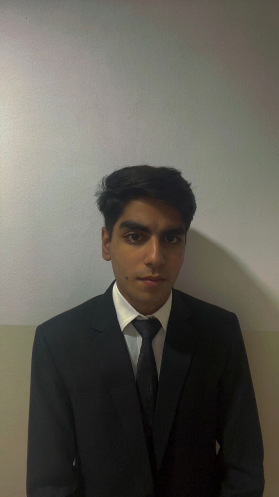

Nischay Rajdev
cse @ muj • bba dbe @ iimb • figuring out ai + finance
about
I'm a dual-degree student splitting my time between a CSE program at MUJ and a BBA in Digital Business Economics at IIMB, trying to sit right at the point where technology and business overlap. I'm more pulled toward the business side — marketing and consulting especially — but I keep circling back to how AI and machine learning are starting to reshape finance, and I like building things that make that intersection concrete instead of theoretical.
currently
focus
roadmap
-
2021
still finding footing
spent most of my time on games and movies, without much direction yet
-
2022
boards
buckled down and scored 92%
-
2022
the IIT-JEE push
took a serious shot at it, largely following the crowd around me
-
2023
the drop year
JEE didn't pan out, so I used the year to figure out what I actually wanted to study
-
2024
landed on CSE + BBA DBE
developed an interest in machines and AI, then found a dual-degree path to pursue both tech and business
-
2025
started the dual degree
CSE @ MUJ, BBA Digital Business Economics @ IIMB
-
2025
Student OS
started a small Notion template venture for college students — a single system to track courses, study progress, and expenses
-
2026
Gillette India project
team project analyzing Gillette India's digital marketing strategy
-
2026
now
focused on deep learning and financial modelling, while preparing for HackX and the IBM hackathon